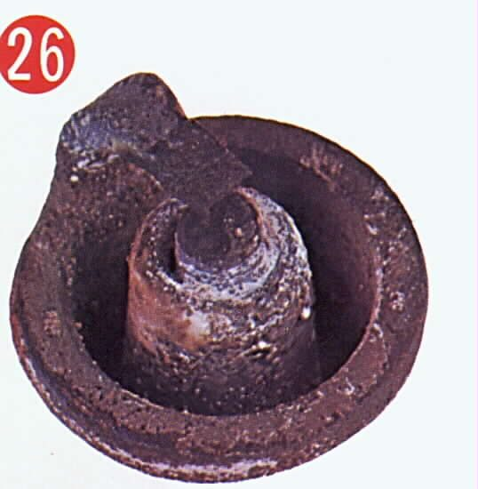
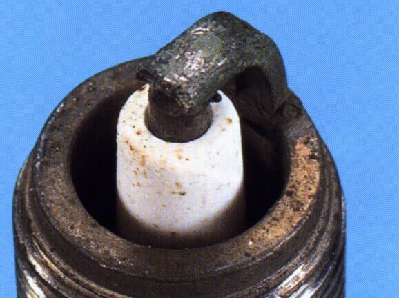
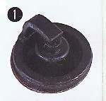

The engine runs while you ride but dies when you close the throttle, slow down or stop at a junction. To idle, an engine needs a small, correct flow of air and fuel through the idle circuit, a good spark and enough compression. A low idle setting, a blocked pilot jet, a dirty throttle body or an air leak are the usual causes.
Is it safe to ride?
Yes, with care. Stalling in traffic is dangerous: keep a finger on the throttle at junctions and fix it soon.
Quick checks first
- Is the choke fully off once warm (carburettor bikes)?
- Is the engine warning light on (fuel-injected bikes)?
- Does the throttle close fully and have a little free play?
- When was the air filter last cleaned?
- Does it stall only when you pull the clutch or select first gear?
Diagnose it step by step
1Does it stall only in the first few minutes from cold, then idle well?
- Yes, carburettor: use the choke a little longer. If it needs the choke even when warm, go to Starts only with the choke on. Fuel-injected: go to step 6.
- No: go to step 2.
2Does it stall when you select a gear, or when you pull the clutch at a stop, but idle normally in neutral?
- Yes, manual clutch: the clutch is dragging and pulling the engine down. Go to Clutch drags. Scooter: see Scooter creeps forward at idle.
- It dies when the side stand moves: go to Engine dies when the side stand moves.
- No: go to step 3.
3Is the air filter clean and the spark plug in good condition?
- No: clean or replace the air filter and service the spark plug. A black, wet plug means a rich idle.
- Yes: go to step 4.
4Carburettor bikes: when warm, is idle slower than your manual's figure?
- Yes: set idle speed and mixture: Adjust carburettor idle speed and mixture.
- The pilot screw makes no difference: the pilot jet is blocked. Clean the carburettor.
- Idle is correct but it still dies: go to step 5.
5Does the idle change when you spray water on the intake rubber joints?
- Yes: you have an air leak. Find an intake air leak.
- No: carburettor bikes go to step 7; fuel-injected bikes go to step 6.
6Fuel-injected bikes: is the warning light on or a code stored?
- Yes: Read engine fault codes and follow the code.
- No: the throttle body or idle passage is probably dirty. Clean the throttle body, then reset the idle if it is still unstable.
7Still stalling?
- Check the valve clearance. The K-Light 125 manual lists a too-small clearance as a cause of low idle. Then do a compression test. Low compression: see Low compression.
What happens if you ignore it: the bike stalls at the worst moment in traffic, and repeated restarting flattens the battery.
Causes, most likely first
| Cause | How to confirm | Fix |
|---|---|---|
| Idle set too low (carburettor) | Warm idle below the manual figure | Adjust idle |
| Blocked pilot jet or old fuel varnish | Pilot screw has no effect; bike stood for weeks | Clean the carburettor |
| Dirty throttle body or idle passage (injection) | Black film around the throttle plate | Clean the throttle body |
| Dirty air filter or fouled plug | Filter clogged; plug black or wet | Air filter, spark plug |
| Intake air leak | Idle changes with water spray | Find an intake leak |
| Clutch drag pulling the engine down | Stalls only in gear | Clutch drags |
| Valve clearance too small, low compression | Feeler gauge, compression gauge | Valve clearance |
Reference values (K-Light 125)
| Item | Value | PDF page |
|---|---|---|
| Idle speed | 1500 ± 100 rpm | 49 |
| ECU fast idle while cold | Below 68 °C | 276 |